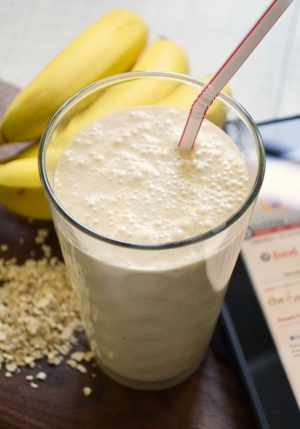

Banana Oat Shake

Description
This banana peanut but shake is to die for! It is also vegan, so it uses 0 animal products. The smooth consistency
comes from the silken tofu that is blended in with it. It can also be used with almond milk or oat milk, depending
on personal preference.
Ingredients
- Bananas
- Peanut butter
- Silken/Soft tofu
- Oat/Almond milk
- Oats
Steps
- Bananas in blender
- Soft tofu in blender
- Oat/Almond milk in blender
- Blend once
- Peanut butter in blender
- Oats in blender
- Mix 1 final time and enjoy!